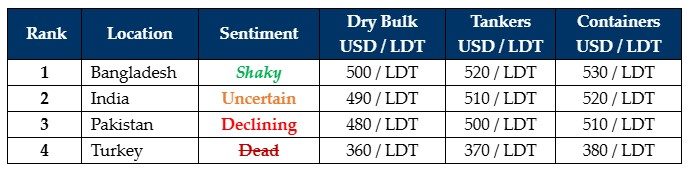

inWeekly Demolition Reports19/08/2024

Amidst an uncertain and tense week in the Middle East where the world anxiously awaited Iran’s attack on Israel for the recent assassination of Hezbollah’sleader at the IRGC guesthouse in the heart of Tehran, global intelligence sources are reporting of an imminent two-wave attack against Israel i.e., not only is Hezbollah expected to trigger the first wave of (largely missile) attacks, but Iran is expected to dig deeper in via a second wave on the back of an assured Israeli retaliation that the IDF vows will be disproportionate to the level of incoming attacks, including just how soon this will all unfold given that Hezbollah and Iranian leaders disappointingly miss key mediations in Qatar this week. Down South, even the Houthis remain suspiciously silent as the world braces for an escalation in the region while international intervention pushes for peaceful resolve. Brewing in it is news of President Putin possibly ‘removed’ due to Ukraine’s successful invasion of “Mother Russia”, resulting in freight sectors still performing unseasonably & unrelentingly well amidst all the unfolding crises that are still choking global ship recycling nations out of life-sustaining tonnage.
Consequently, we continue to see world economies trudge silently up this unnecessary hill of economic instability that started with a massive backlog in global trade and drove inflation up since the onset of Covid-19, which was further exacerbated by the attacks on and even sinking of merchant vessels in the Red Sea Lanes. 2024 summer is certainly unfolding into a horror movie where levels across the board remain calamitous due to nervous sentiments, political instability, violently shaky fundamentals across the board, and possible war.
As Cheaper Chinese steel imports cause concerns in India and Pakistan again, further anti-dumping duties are clearly needed in order to curb cheaper steel imports from undercutting inventories at domestic ship recycling yards, further creating economic hurdles for local ship recyclers. As such, a meagre collection of poorer condition Far Eastern built & owned vessels has been concluded below USD 500/LDT, as the markets take stock of events expected to unfold over these summer months. On the local markets front, we see a modicum of stability return to Bangladesh as PM Hasina flees the country and the military temporarily takes charge, India was greeted with a minor yet welcome surprise in fundamentals, Pakistani Buyers dropped back down the market rankings again, and Turkey continues to suffer silently, week after week. Vessel offers therefore remain tentative and nearly nonexistent from certain recyclers who are reevaluating the markets based on unfolding sentiments, domestic fundamentals, and global events, before committing firmly on price again. For now, the Middle East & Monsoon Rains (M&Ms?) intend to keep the global ship recycling community on a forced holiday.
For week 33 of 2024, GMS demo rankings / pricing for the week are as below.

📄 Download PDF: Ship-recycling-market-insight-Week-33-8-16-2024-Silent_Hill.pdfSource: GMS,Inc.https://www.gmsinc.net/gms_new/index.php/web